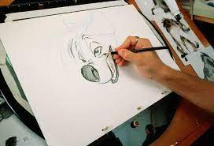
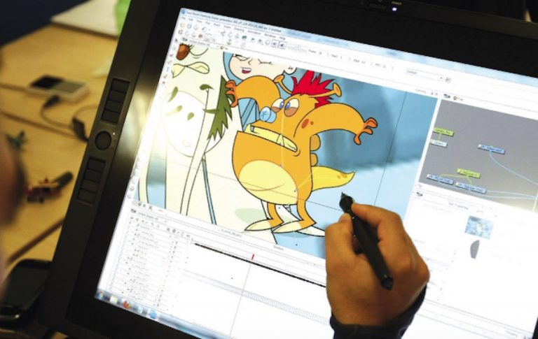
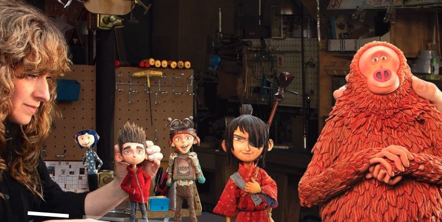
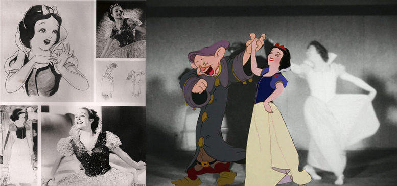
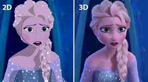
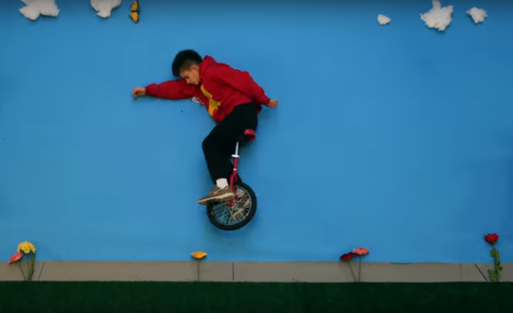
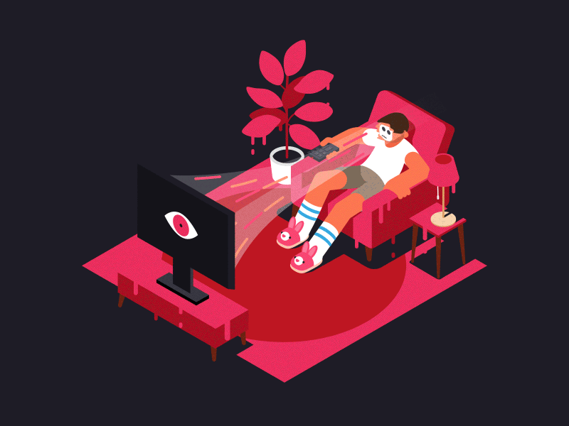

Si quieres esuchar el contenido de ésta página, reproduce lo siguiente:
¿Qué es?
La animación es un proceso, utilizado por uno o más animadores, para dar la sensación de movimiento a
imágenes, dibujos u otro tipo de objetos inanimados (figuras de plastilina, por ejemplo). Se considera,
normalmente, una ilusión óptica. Existen numerosas técnicas para realizar una animación que van más allá de
los familiares dibujos animados.
Tipos de animacion
Animacion Tradicional: El Dibujo Animado es una secuencia visual o audiovisual si se le añade sonido, de
animación que se
obtiene dibujando a mano cada uno de los fotogramas que la constituyen, lo cual genera la secuencia, es
decir una representación de imágenes en movimiento.

Animacion Digital: La animación tradicional agrupa una serie de técnicas que, mediante secuencias de
dibujos o imágenes, dan la sensación de movimiento. En el caso de la animación digital o por computadora
el efecto se logra con el uso de programas computacionales.

Animacion Stop-Motion: Es un estilo de animación que parte de objetos inanimados. Se capturan los
movimientos realizados manualmente con una cámara fotográfica y después se unen y editan en una
computadora.

Animacion por rotoscopia: Se copian los fotogramas de una filmación real y se sustituyen con dibujos
creados digitalmente a partir de la imagen real. Esto permite agregar filtros, colores, efectos y
estilos para transmitir un concepto estético.

Animacion 3D: Este tipo de animación permite mostrar imágenes en espacios tridimensionales mediante el
uso de software avanzado. El animador realiza la anatomía crea la anatomía de los personajes de modo muy
simplificado, debido a que de este modo es más fácil animarlos. Una vez que el modelado es completado
cada uno de los fotogramas es renderizado.

Pixilacion: Es considerada una variante de la técnica stop-motion, únicamente varía en que se emplean
personas interactuando con objetos reales. Se les fotografía haciendo pequeños movimientos. Esto permite
obtener una mirada única del mundo real.

Motion Graphics: Son videos en los se incorporan distintos elementos como dibujos, fotografías o
vectores y el movimiento se usa en ciertas partes de la composición para hacerlas sobresalir.

Brickfilm: El brickfilm o películas de ladrillos se refieren a animaciones que se construyen a partir de
fotogramas de pequeños elementos como ladrillos de LEGO y otros juguetes de construcción similares.
Posteriormente, los fotogramas se unen por computadora para dar la ilusión de movimiento.